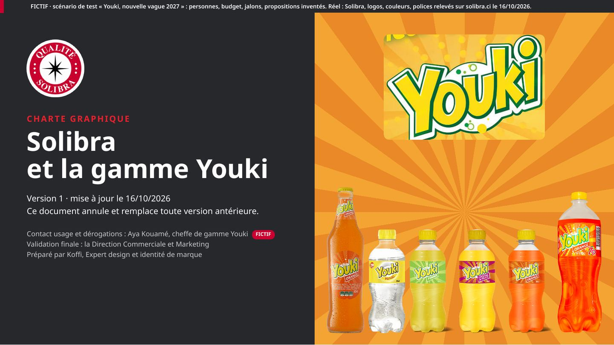
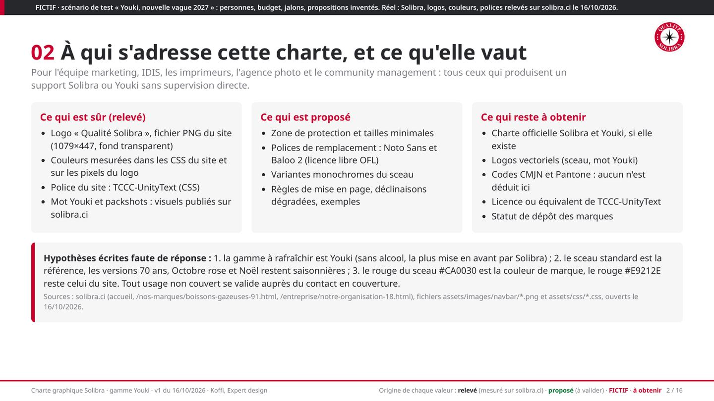
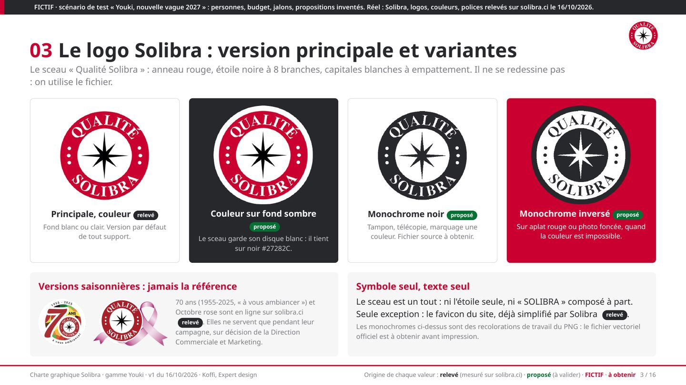
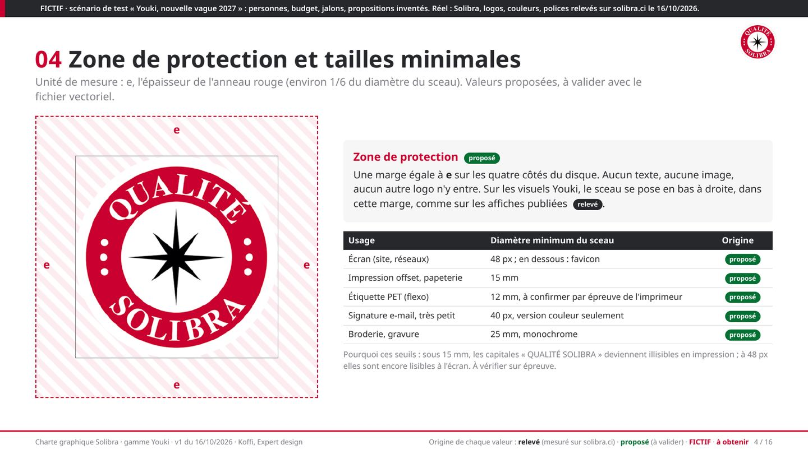
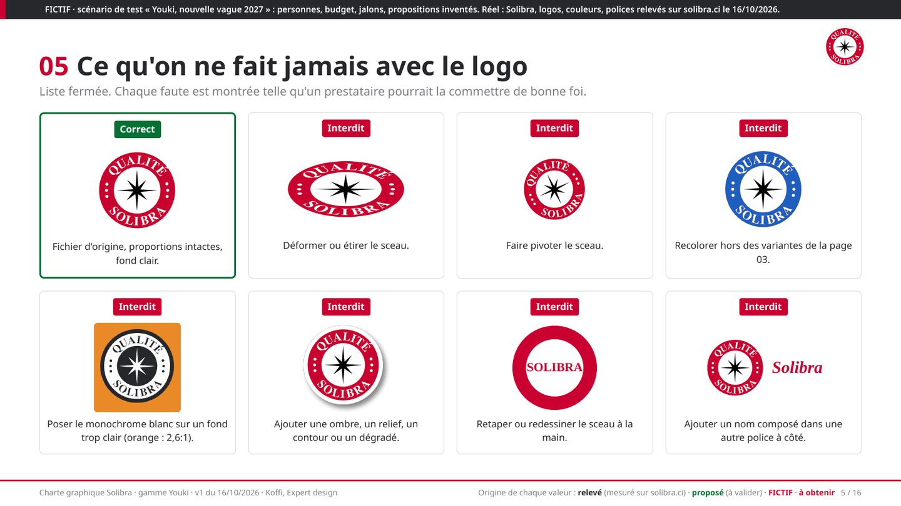
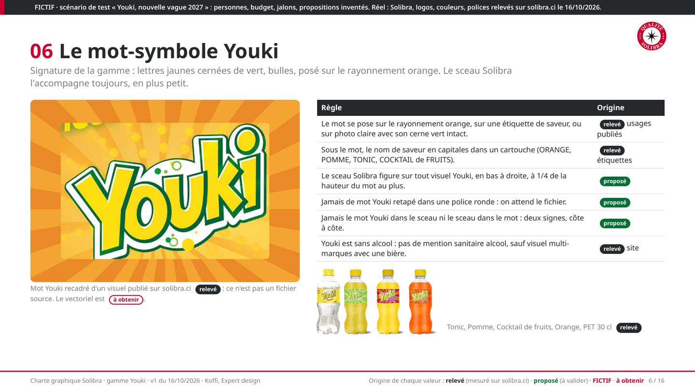
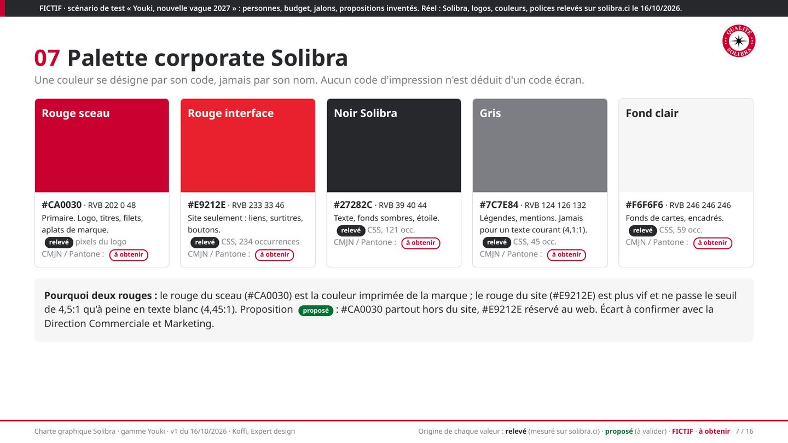
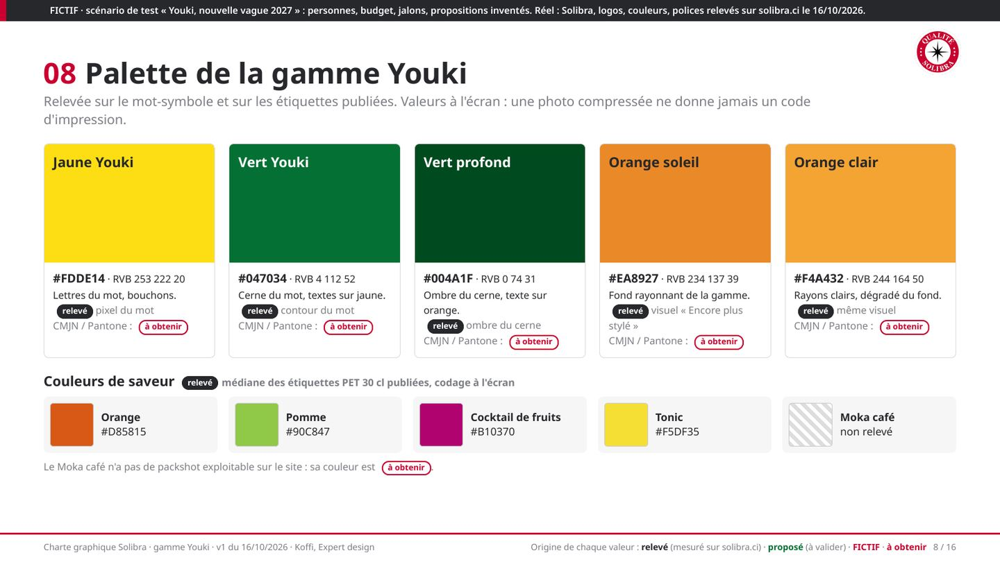
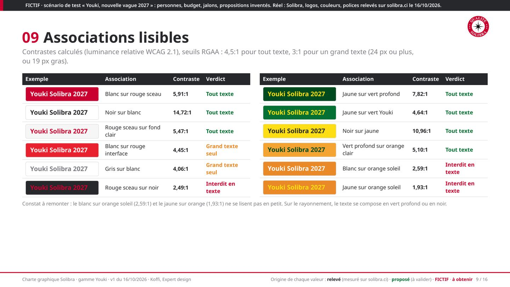
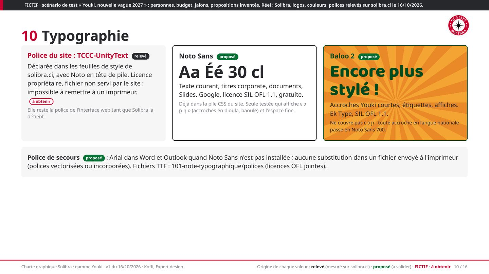
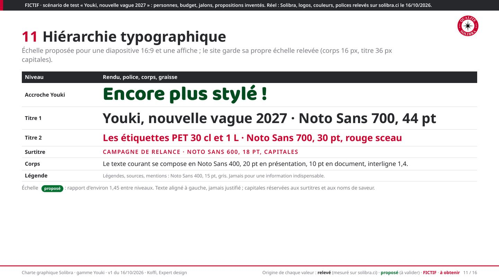
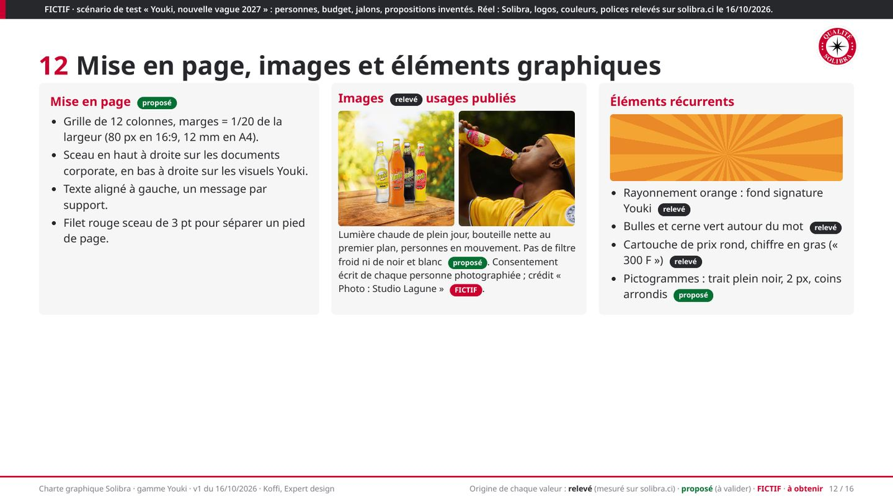
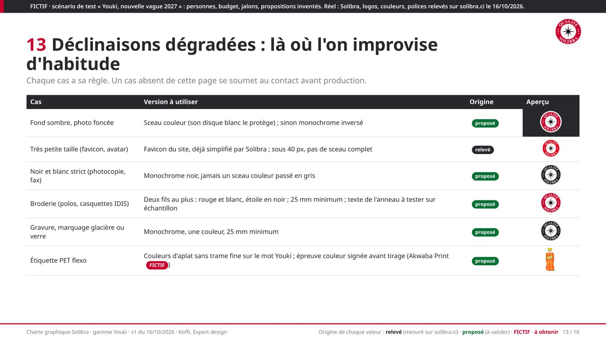
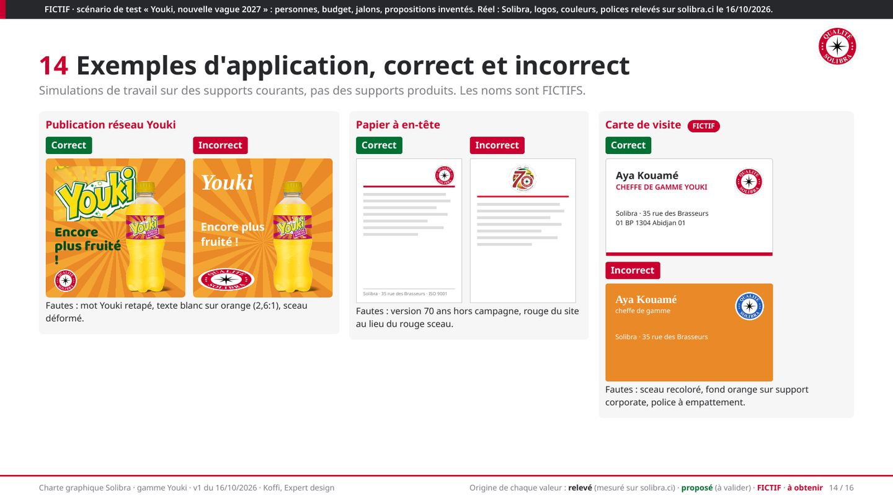
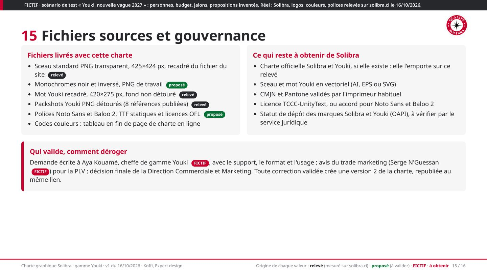
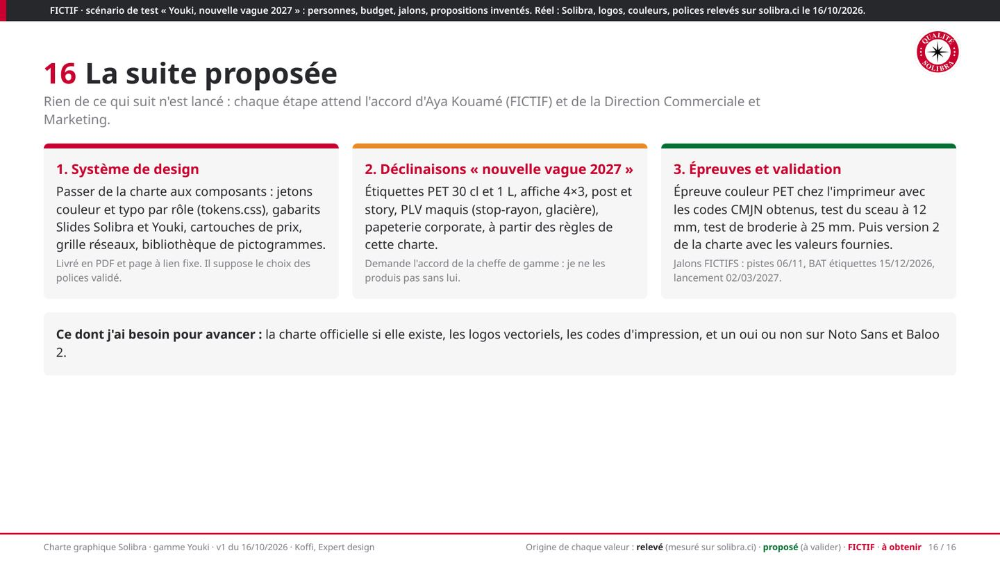
Valeurs à copier (écran uniquement)
| Couleur | HEX | Rôle | Origine |
|---|---|---|---|
| Rouge sceau | #CA0030 | primaire, logo, titres | relevé, pixels du logo |
| Rouge interface | #E9212E | site web seulement | relevé, CSS |
| Noir Solibra | #27282C | texte, fonds sombres | relevé, CSS |
| Gris | #7C7E84 | légendes | relevé, CSS |
| Fond clair | #F6F6F6 | encadrés | relevé, CSS |
| Jaune Youki | #FDDE14 | mot Youki | relevé, pixel du mot |
| Vert Youki | #047034 | cerne du mot | relevé |
| Vert profond | #004A1F | ombre, texte sur orange | relevé |
| Orange soleil | #EA8927 | fond rayonnant | relevé, visuel publié |
| Orange clair | #F4A432 | rayons clairs | relevé, visuel publié |
CMJN et Pantone : à obtenir de Solibra et de l'imprimeur, aucun n'est déduit d'un code écran. Polices proposées : Noto Sans (texte, OFL) et Baloo 2 (accroches Youki, OFL), en remplacement de TCCC-UnityText, police propriétaire du site.
Sources : solibra.ci, page Boissons gazeuses, Notre organisation, consultées le 16/10/2026.